library(spiDE)
library(SpatialExperiment)
data(toySpiDE)
toySpiDE
#> class: SpatialExperiment
#> dim: 20 2400
#> metadata(0):
#> assays(1): counts
#> rownames(20): G1 G2 ... G19 G20
#> rowData names(0):
#> colnames(2400): cell1 cell2 ... cell2399 cell2400
#> colData names(9): sample_id condition ... Area nCount
#> reducedDimNames(0):
#> mainExpName: NULL
#> altExpNames(0):
#> spatialCoords names(2) : x y
#> imgData names(0):
patients <- unique(as.data.frame(colData(toySpiDE))[, c("sample_id", "condition")])
table(patients$condition)
#>
#> Non-responder Responder
#> 8 8
table(toySpiDE$cell_type)
#>
#> A B C
#> 813 726 861spiDE
spiDE finds neighbourhood-dependent differential expression in spatial transcriptomics. Cells of one type do not behave the same everywhere in a tissue. A tumour cell sitting among fibroblasts may express a different set of genes from a tumour cell surrounded by other tumour cells, and the way it responds may differ between patients who respond to a treatment and patients who do not. spiDE asks, for a chosen index cell type, whether the expression of a gene changes with the local density of another cell type, which we call the niche, and whether that change differs between two conditions.
Doing this well is harder than it sounds. The cells of one patient share their genetics, their treatment and the way their sample was handled, and neighbouring cells share their local tissue environment. If every cell is treated as an independent observation, the more cells are measured the more certain a result looks, even when the patients disagree with each other. A condition such as response to treatment is a property of a patient, not of a cell, so the patient is the right unit of replication. spiDE builds this into every test: the evidence for a result is how consistently the niche slope behaves between patients, never how many cells were measured.
One hypothesis in spiDE is one (gene, index type, niche type) combination, which we call a triplet. Each triplet gets up to two tests:
- The pooled test asks whether, within patients, the gene’s expression in the index type changes with the density of the niche type, consistently across patients.
- The condition-specific test asks whether that dependence differs between two conditions, such as responders and non-responders.
The analysis runs in three steps, and each has its own function:
buildNiches()measures the density of every cell type around every cell.fitSpiDE()fits a negative binomial regression for every gene in every index type, with a separate baseline for every patient, so that the niche coefficients are slopes within patients.testSpiDE()tests those slopes across patients.
spiDE() runs all three in one call. This article walks through the whole pipeline on a small example, and then through the gene-set test, the between-patient test of niche abundance, the plots and a few practical points. The statistics are explained in vignette("spiDE-model"), how well the tests hold up in vignette("spiDE-calibration"), and how many patients and cells a study needs in vignette("spiDE-design").
This website documents two packages that implement the same method: the R package spiDE and the Python package spidepy. This page walks through the R package. The same walk-through for Python, with its outputs, is the Python tutorial, and R vs Python lists how the two correspond and where they differ. Both packages can be installed as follows:
if (!requireNamespace("BiocManager", quietly = TRUE))
install.packages("BiocManager")
BiocManager::install("BhuvaLab/spiDE")spidepy is not on PyPI yet; install it from GitHub. The extra index gives a CPU-only build of PyTorch, which it needs through spanormpy:
pip install --extra-index-url https://download.pytorch.org/whl/cpu "spidepy @ git+https://github.com/BhuvaLab/spidepy.git"Load the data
We begin by loading a small simulated data set that ships with the package. It holds 16 patients, eight responders and eight non-responders, with 150 cells each, three cell types (A, B and C) and 20 genes. We planted exactly one effect in it: gene G1 is up-regulated in index type A, in responders only, in proportion to the local density of niche type B. Because we know the answer, we can check that spiDE finds it.
spiDE needs a SpatialExperiment with the following:
- Raw integer counts in the
countsassay. Normalised or back-transformed values are refused, because the model needs the counting noise of real counts. - A cell type for every cell, in
cell_type. - A patient for every cell, in
sample_id. There should be one sample per patient. If a patient has several sections, put the patient insample_idand the section insection, so that spatial variation is estimated for each section separately. - For the condition-specific test, a two-level condition that is constant within each patient, here the
conditioncolumn. If the condition is partly confounded with slide or batch, a patient-level column of slides can be given asstrata.
Build the niches
For each cell, buildNiches() places a smooth bump, a Gaussian kernel, on every cell of a given type and adds the bumps up. The result is a density of each cell type at every cell, which says how much of that type there is nearby. The width of the bump, sigma, is the bandwidth and is in the units of the spatial coordinates. Each density is stored as a column of a reducedDim named after the bandwidth.
spe <- buildNiches(toySpiDE, sigma = 30, verbose = FALSE)
head(reducedDim(spe, "Niche30"), 3)
#> A B C
#> cell1 0.6569450 1.4712172285 0.2947218
#> cell2 1.4124748 0.0003534644 1.2449427
#> cell3 0.7352794 0.0000000000 1.4184528Choose a bandwidth
The bandwidth sets what we mean by a neighbourhood. A small bandwidth looks at the immediate neighbours of a cell, and a large one at the tissue around it. A good bandwidth gives a niche map that is neither speckled nor flat. We can look at the density of niche type B in one sample at two bandwidths and judge by eye:
spe2 <- buildNiches(spe, sigma = 10, verbose = FALSE)
plotNicheMap(spe2, niche = "B", sample = "S1", index = "A", sigma = 10)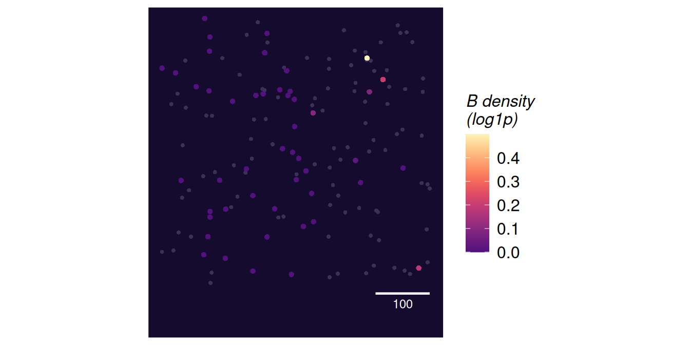
plotNicheMap(spe2, niche = "B", sample = "S1", index = "A", sigma = 30)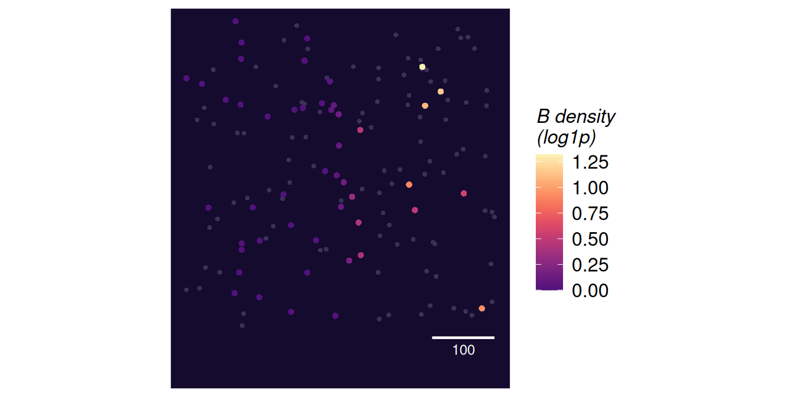
At the smaller bandwidth most cells have no niche cell of type B within reach and the density is zero, so the map is speckled by the position of single cells. At the larger one the density varies smoothly across the section, and we can see where B cells are concentrated. We use 30 for the rest of this article. For real data, choose the bandwidth from what you know about the biology, such as the distance over which cells signal to one another, and from maps like these. mergeNiches() can pool several cell types into one niche group (all lymphocytes, say) before fitting. spiDE never tests an index type against its own niche, merged or not.
Fit the model
fitSpiDE() takes the object with its niches, the bandwidth to use and, if we want to test a condition, the name of the condition column.
fit <- fitSpiDE(spe, condition = "condition", sigma = 30, verbose = FALSE)
fit
#> SpiDEFit (slopes engine), bandwidth 30
#> 16 patients; condition: condition
#> index A: 20 genes x 2 niches (B, C)
#> index B: 20 genes x 2 niches (A, C)
#> index C: 20 genes x 2 niches (A, B)By default every cell type with at least min.cells cells in at least min.patients patients is an index type, and every other cell type is tested as its niche. The index and niche arguments restrict this; niche types that are not tested stay in the model as adjustments. Genes detected in fewer than min.detect of an index type’s cells are not tested in it. The model adjusts for sequencing depth with the centred log library size of each cell, and further cell-level measurements such as cell area can be added with covariates.
The engine argument chooses how the error between patients is estimated. The default, "slopes", fits the model once without the condition and then estimates every patient’s own slope for every niche. Because the fit never sees the condition, any patient-level condition can be tested afterwards, and permuting the condition reruns only the test. The alternative, "sandwich", fits the condition-specific model directly and needs the condition at fit time. The slopes engine is the more powerful of the two when effects vary between patients, and it is needed for spiGSEA(). vignette("spiDE-model") explains both engines.
Test the slopes
testSpiDE() combines the patients’ slopes. It always runs the pooled test, and it runs the condition-specific test when a condition is available, here the one recorded by fitSpiDE(). A condition can also be given to testSpiDE() directly.
res <- testSpiDE(fit)
res
#> SpiDEResults (slopes engine)
#> pooled across patients: 120 tests, 2 at FDR 0.05
#> condition-specific (Responder - Non-responder; pooled_or_heterogeneity family): 2 tests, 1 at FDR 0.05The pooled test
The pooled results are a table with one row per triplet. estimate is the average within-patient slope on the natural-log scale per unit of the log1p niche density, t and p are the test statistic and its p-value, and q is the q-value after a Benjamini-Hochberg correction over every triplet.
head(results(res, test = "pooled"))The planted triplet, G1 in A against B, comes out as the strongest pooled association, with a t of 6.83. Remember that a pooled call says that, within a patient, index cells with more of the niche type around them express more (or less) of the gene, consistently across patients.
The condition-specific test
The condition-specific table has the same layout. Its estimate is the difference between the conditions in the average slope, the second level minus the first, and res$contrast says which two levels were compared.
res$contrast
#> [1] "Responder - Non-responder"
cond <- results(res, test = "condition")
cond[cond$in_family, ]By default the condition-specific test is carried out only among the triplets that pass the pooled test, or whose slopes vary between patients more than their sampling noise allows (p.heterogeneity, corrected at the same fdr). Neither filter looks at the condition, so the correction for multiple testing is spent on triplets that have something for the condition to explain, and the result is valid under any relabelling of the patients. Rows outside this family have q = NA. Other families are available through the procedure argument: "heterogeneity" and "filtered" use one filter each, and "all" tests every triplet.
In the table, the planted slope is larger in responders than in non-responders by 0.27 log units per unit of log1p density (q = 0.02), which is the effect we planted. The whole pipeline can also be run in one call:
res <- spiDE(toySpiDE, condition = "condition", sigma = 30)Look at the patients behind a result
A call is only as good as the patients behind it. With the slopes engine, every patient has its own slope for every triplet, and these slopes are the evidence that the tests weigh. patientSlopes() returns them as a table, with the slope’s variance and the number of cells that went into it.
ps <- patientSlopes(fit, gene = "G1", index = "A", niche = "B")
head(ps[, c("patient", "condition", "slope", "var_spatial", "ncells")])plotPatientSlopes() draws them. Each point is a patient’s slope with its interval, sized by the weight the patient carries in the tests. The weighted average of each condition is marked, and the pooled estimate is shown as a band.
plotPatientSlopes(res, gene = c("G1", "G2"), index = "A", niche = "B")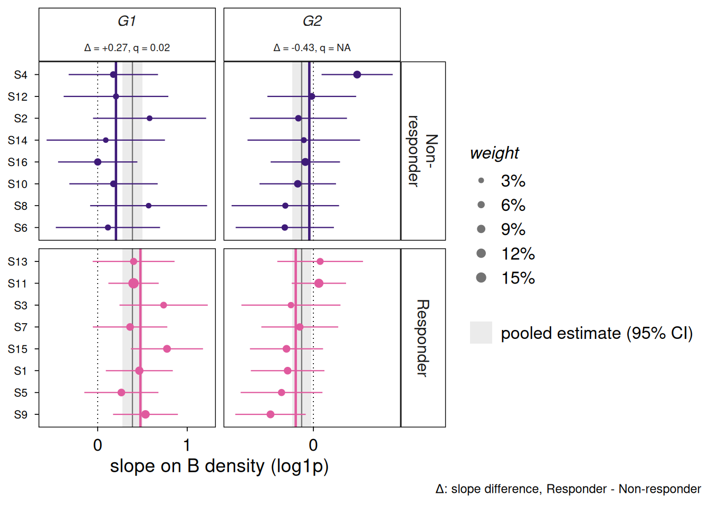
For G1, the slopes of the patients lie mostly above zero in both conditions, which gives the pooled call, and the slopes of the responders sit further to the right than those of the non-responders, which is what the condition-specific test picks up. The panel title reports its difference and q-value. For G2, which has no planted effect, the slopes are spread widely on both sides of zero, their intervals are wide, and the two conditions overlap.
The model also gives each patient a baseline level of every gene, its intercept. These baselines absorb everything that differs between patients as a whole, so they are not tested, but they are worth a look. patientIntercepts() returns them with the patient-level covariates, and plotPatientEffects() summarises them by principal components of the intercepts, showing how much of each component each covariate explains.
intercepts <- patientIntercepts(fit, gene = "G1", index = "A")
head(intercepts)plotPatientEffects(res, index = "A")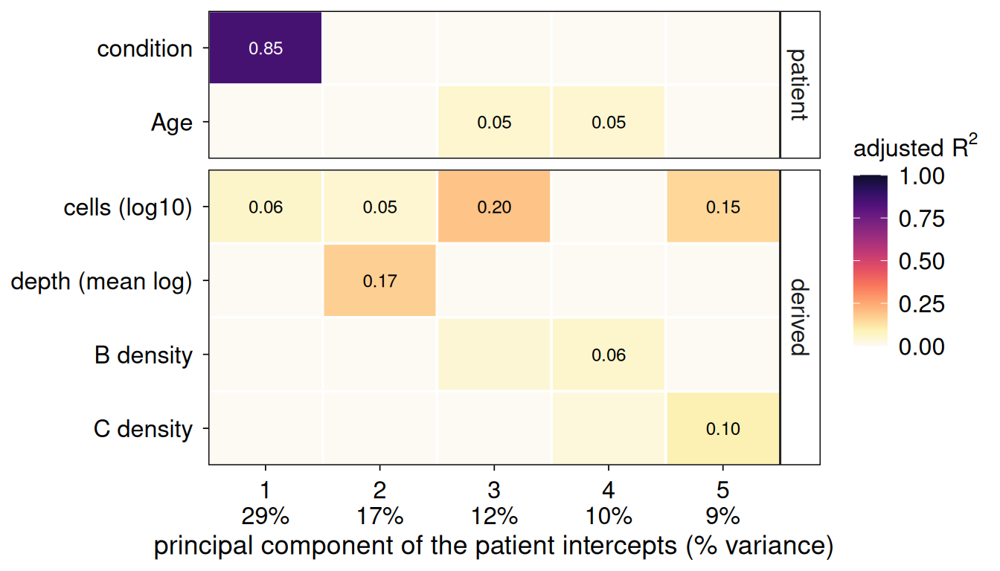
In this example the first component of the intercepts lines up almost entirely with the condition, which is what we expect: the baselines absorb the difference in level between responders and non-responders, so that this difference cannot be mistaken for a difference in slope. Other covariates, such as the number of cells and the depth of a patient, explain smaller parts of the other components. If a slide or batch column lined up with a component of the slopes instead, the condition would be partly confounded with it, and that column should go into strata. Setting niche in plotPatientEffects() draws the same plot for the slopes, which is the check to make before trusting a condition-specific call.
Test gene sets
Genes do not act alone, and a set of genes with a shared function often shows an effect that no single gene shows clearly. spiGSEA() tests gene sets in the way testSpiDE() tests genes. It takes the results and any named list of gene symbols, such as the collections of the msigdb package. Each patient gets a slope for the set, which averages its genes’ slopes after putting them on a common scale, and these set slopes go through the same pooled and condition-specific tests. By default (type = "competitive") the average over the other tested genes is subtracted, so a set is called when it moves more than the typical gene. spiGSEA() needs the slopes engine.
sets <- list(planted = c("G1", "G2", "G3"), other = paste0("G", 4:8),
rest = paste0("G", 9:20))
gs <- spiGSEA(res, sets, min.size = 3)
head(gs[, c("set", "index", "niche", "test", "size", "estimate", "p", "q", "q.global")])There are two q-values. q adjusts within each (index, niche, test) column, and q.global over every set, index and niche of a test. When there are many sets and many columns, q.global is the one to read. plotTripletHeatmap() shows the t statistic of every set in every (index, niche) column, with a dot where q.global passes.
plotTripletHeatmap(gs, test = "pooled")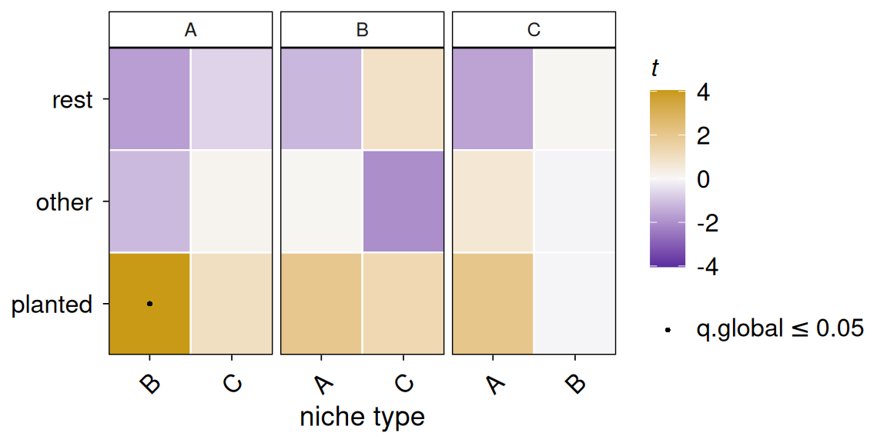
The set holding the planted gene stands out in the column of A against B, where it is called, and no other set is called.
A different question: niche abundance
The tests above use only the slopes within patients. A patient whose index cells sit among many niche cells may also express a gene differently as a whole from a patient whose index cells do not. This is a real association, but it is a different claim. It says that patients with more of a niche type differ, not that a cell responds to its neighbours, and the patient intercepts absorb it so that testSpiDE() never sees it. testNicheAbundance() asks it directly. For each patient and index type it forms a pseudobulk profile and compares it with the patient’s average niche density, across patients.
ab <- testNicheAbundance(spe, condition = "condition", sigma = 30, verbose = FALSE)
head(ab)With a condition, the rows with term "niche" give the association averaged over the two conditions, and the rows with "condition:niche" test whether it differs between them, again the second level minus the first. Each term is its own family for multiple testing, with its own q.global. A patient who alone carries most of a niche type’s spread is down-weighted (max.leverage), so that one patient cannot make a call on its own. Gene sets go through the same test with testNicheAbundance(genesets = ).
The two kinds of result must not be mixed up. A result of testSpiDE() says that, within a patient, cells with more of this niche differ, and a result of testNicheAbundance() says that patients with more of this niche differ. plotNicheResponse() shows both on one gene. With adjust = FALSE it draws the raw data: each segment is one patient’s slope, the quantity spiDE tests, and the dashed line through the patients’ means is the between-patient association that testNicheAbundance() tests.
plotNicheResponse(spe, res, gene = "G1", index = "A", niche = "B", adjust = FALSE)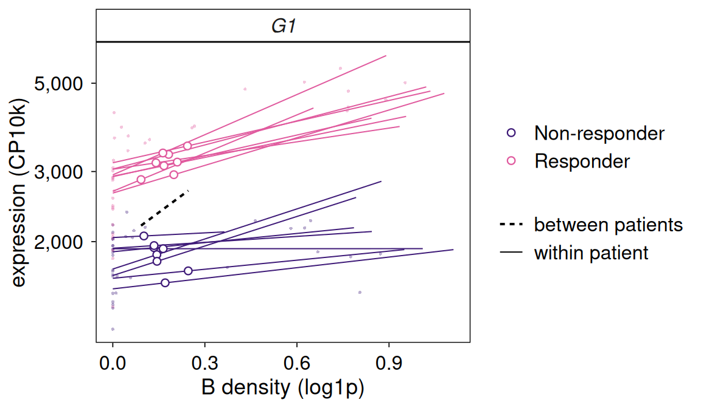
Plots
All the plots are ggplot2 objects in one house style (theme_spiDE()), with one colour-blind-safe palette (spiDEColours()) that uses one pair of colours for slopes that rise or fall with the niche and another pair for the two levels of the condition. Each plot returns its data in p$data, so a plot is changed by adding layers or a theme, and any two plots can be combined with patchwork.
Where the calls are
plotCallMap() counts, for each (index, niche) column, how many triplets pass, separately for slopes that rise and slopes that fall with the niche’s density, and plotTopTriplets() shows the strongest ones. When we give it the SpatialExperiment, a triangle marks a gene that is several-fold higher in the niche type than in the index type, which we come back to below.
plotCallMap(res, test = "pooled")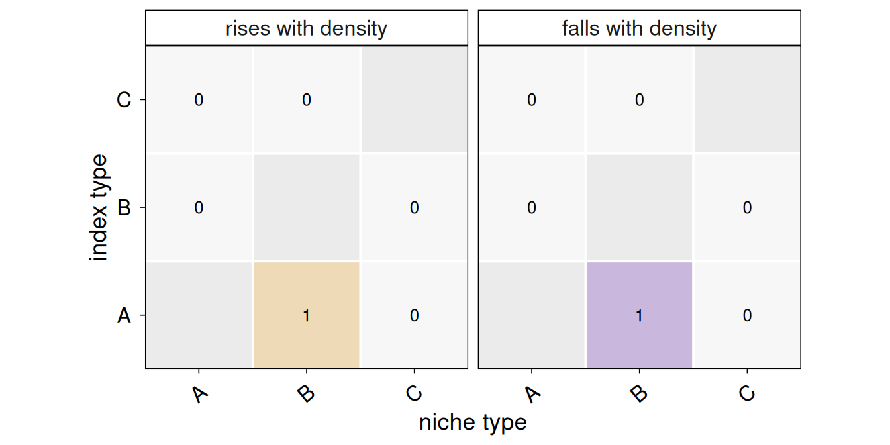
plotTopTriplets(res, test = "pooled", n = 12, spe = spe)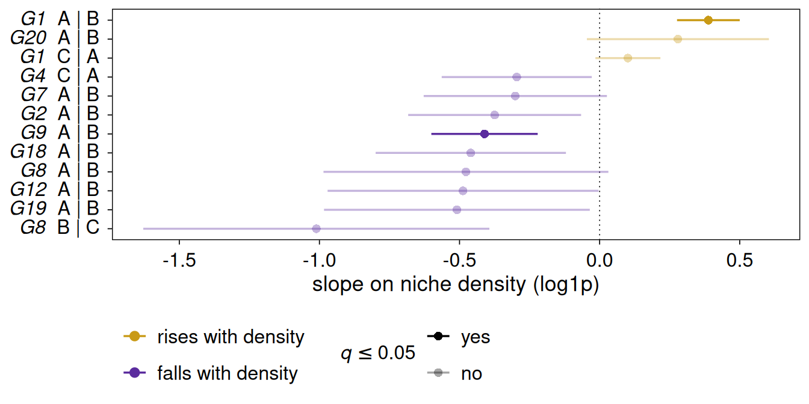
The cells behind a slope
plotNicheResponse() shows the cells themselves. By default, each patient’s fitted intercept is divided out, so the patients share one level and the slopes that the tests compare are easy to see.
plotNicheResponse(spe, res, gene = c("G1", "G2"), index = "A", niche = "B")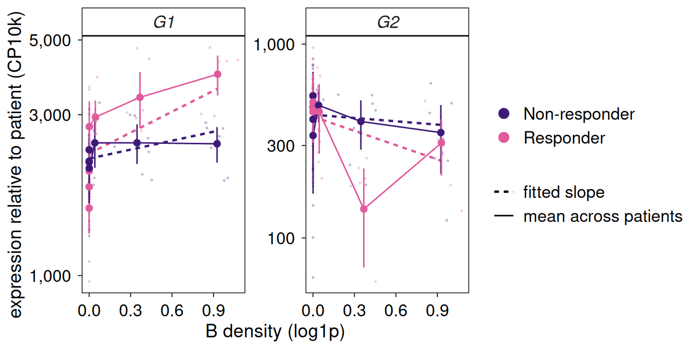
For G1, the expression of the responders’ cells rises with the density of B while that of the non-responders is nearly flat. For G2, there is no clear trend in either group.
Check for spillover
Cell segmentation is never perfect, and transcripts of a neighbouring niche cell can be assigned to an index cell. These transcripts rise with the niche’s density and look like a response of the index cell. plotSpillover() plots every triplet by its signed z statistic against how much higher the gene is in the niche type than in the index type, and marks the region of genes that are several-fold higher in the niche type. If the calls fell mostly in that region, they would be the niche type’s own markers and spillover the likely explanation.
plotSpillover(res, spe)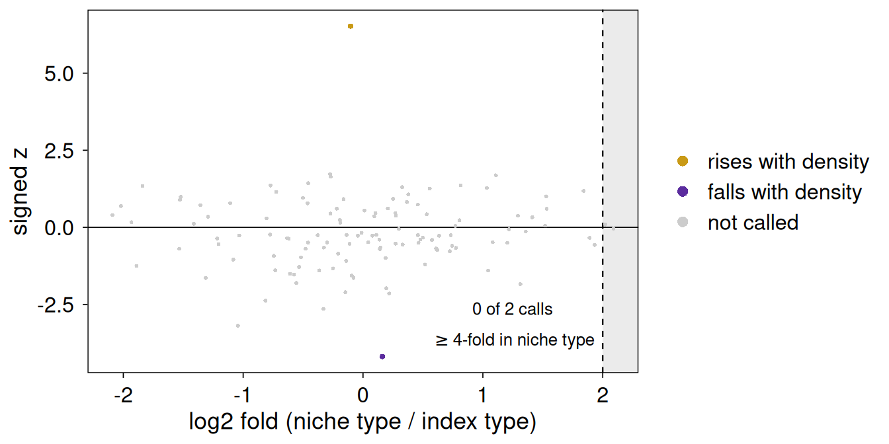
In this example the plot reports that none of the two calls lies in that region, so spillover does not explain them. In real data, report the niche type’s fold change together with every call.
Diagnostics
plotPValues() shows the distribution of the p-values by expression band. It is a sanity check on the data at hand and is not a replacement for the calibration checks of vignette("spiDE-calibration").
plotPValues(res)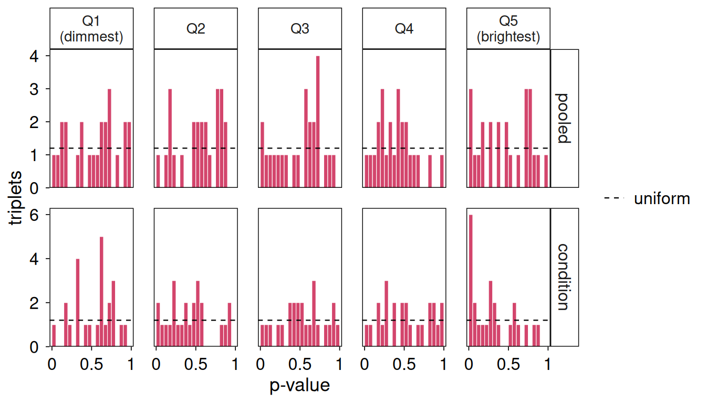
Figures combine with patchwork, for example to put a patient-level and a cell-level view of the same triplet side by side:
library(patchwork)
plotPatientSlopes(res, gene = "G1", index = "A", niche = "B") +
plotNicheResponse(spe, res, gene = "G1", index = "A", niche = "B") +
plot_annotation(tag_levels = "A")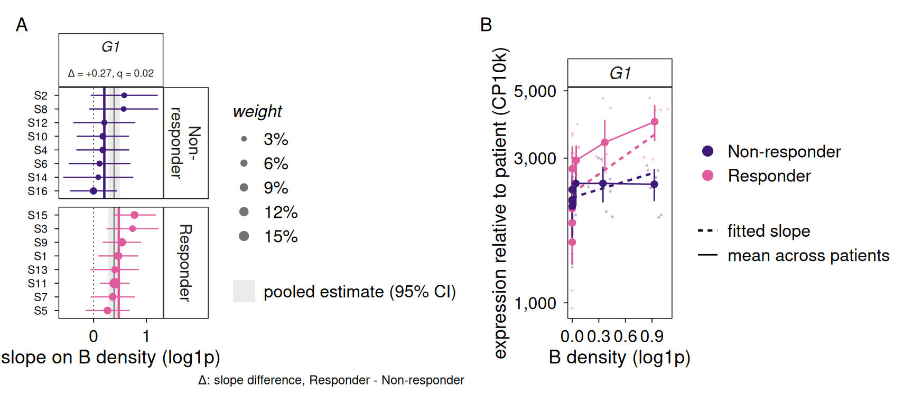
Practicalities
Runtime. The fit is the expensive step. Every gene is fitted separately in every index type, so the time grows with the number of index types, the number of genes and the number of cells, but it hardly depends on the number of patients, because the patient baselines are handled algebraically. The example above takes a few seconds. Testing is fast, and a permutation of the condition under the slopes engine reruns only the test.
Parallelism. Genes are fitted independently within an index type, so the BPPARAM argument spreads the genes over workers:
library(BiocParallel)
fit <- fitSpiDE(spe, condition = "condition", sigma = 30,
BPPARAM = MulticoreParam(4))Forked workers run one BLAS thread each when the RhpcBLASctl package is installed. Otherwise, set OMP_NUM_THREADS=1 in the job, because workers that each use many threads compete with one another and run much slower.
Several bandwidths. One fit uses one bandwidth. We can build the niches at several bandwidths and fit each one, but the results are a sensitivity analysis and not a search: each bandwidth is its own set of tests, and picking the best of them after looking would not be valid. Calls that hold at both bandwidths are the more convincing.
Below we refit index type A at the smaller bandwidth and count the pooled calls at each bandwidth.
fit10 <- fitSpiDE(spe2, condition = "condition", sigma = 10, index = "A",
verbose = FALSE)
res10 <- testSpiDE(fit10)
r10 <- results(res10, test = "pooled")
r30 <- results(res, test = "pooled")
r30 <- r30[r30$index == "A", ]
c(sigma10 = sum(r10$q < 0.05, na.rm = TRUE), sigma30 = sum(r30$q < 0.05, na.rm = TRUE))
#> sigma10 sigma30
#> 3 2Both bandwidths call a handful of triplets in A, including the planted one, so the conclusion does not hinge on the choice here.
Objects from older versions. Objects saved by spiDE 0.99.22 and earlier came from a different model and are refused by this version, with a message that names the archive that reads them.
Session information
sessionInfo()
#> R version 4.6.1 (2026-06-24)
#> Platform: x86_64-pc-linux-gnu
#> Running under: Ubuntu 24.04.5 LTS
#>
#> Matrix products: default
#> BLAS: /usr/lib/x86_64-linux-gnu/openblas-pthread/libblas.so.3
#> LAPACK: /usr/lib/x86_64-linux-gnu/openblas-pthread/libopenblasp-r0.3.26.so; LAPACK version 3.12.0
#>
#> locale:
#> [1] LC_CTYPE=C.UTF-8 LC_NUMERIC=C LC_TIME=C.UTF-8
#> [4] LC_COLLATE=C.UTF-8 LC_MONETARY=C.UTF-8 LC_MESSAGES=C.UTF-8
#> [7] LC_PAPER=C.UTF-8 LC_NAME=C LC_ADDRESS=C
#> [10] LC_TELEPHONE=C LC_MEASUREMENT=C.UTF-8 LC_IDENTIFICATION=C
#>
#> time zone: UTC
#> tzcode source: system (glibc)
#>
#> attached base packages:
#> [1] stats4 stats graphics grDevices utils datasets methods
#> [8] base
#>
#> other attached packages:
#> [1] patchwork_1.3.2 SpatialExperiment_1.23.0
#> [3] SingleCellExperiment_1.35.2 SummarizedExperiment_1.43.0
#> [5] Biobase_2.73.2 GenomicRanges_1.65.4
#> [7] Seqinfo_1.3.2 IRanges_2.47.5
#> [9] S4Vectors_0.51.10 BiocGenerics_0.59.12
#> [11] generics_0.1.4 MatrixGenerics_1.25.0
#> [13] matrixStats_1.5.0 spiDE_0.99.37
#>
#> loaded via a namespace (and not attached):
#> [1] gtable_0.3.6 rjson_0.2.23 xfun_0.62
#> [4] ggplot2_4.0.3 ggrepel_0.9.8 spatstat.sparse_3.2-0
#> [7] lattice_0.22-9 vctrs_0.7.3 tools_4.6.1
#> [10] spatstat.utils_3.2-5 goftest_1.2-3 parallel_4.6.1
#> [13] tibble_3.3.1 pkgconfig_2.0.3 Matrix_1.7-5
#> [16] RColorBrewer_1.1-3 S7_0.2.2 lifecycle_1.0.5
#> [19] SpaNorm_1.7.16 deldir_2.0-4 compiler_4.6.1
#> [22] farver_2.1.2 RhpcBLASctl_0.23-42 statmod_1.5.2
#> [25] codetools_0.2-20 spatstat.explore_3.8-3 htmltools_0.5.9
#> [28] yaml_2.3.12 pillar_1.11.1 BiocParallel_1.47.0
#> [31] DelayedArray_0.39.8 limma_3.99.2 spatstat.univar_3.2-0
#> [34] magick_2.9.1 abind_1.4-8 nlme_3.1-169
#> [37] spatstat.geom_3.8-3 tidyselect_1.2.1 rsvd_1.0.6
#> [40] digest_0.6.39 BiocSingular_1.29.2 dplyr_1.2.1
#> [43] splines_4.6.1 labeling_0.4.3 polyclip_1.10-7
#> [46] fastmap_1.2.0 grid_4.6.1 cli_3.6.6
#> [49] SparseArray_1.13.4 magrittr_2.0.5 S4Arrays_1.13.2
#> [52] spatstat.data_3.1-9 withr_3.0.3 tensor_1.5.1
#> [55] scales_1.4.0 rmarkdown_2.32 XVector_0.53.0
#> [58] otel_0.2.0 ScaledMatrix_1.21.0 beachmat_2.29.3
#> [61] evaluate_1.0.5 knitr_1.52 irlba_2.4.1
#> [64] mgcv_1.9-4 rlang_1.3.0 Rcpp_1.1.2
#> [67] spatstat.random_3.5-2 glue_1.8.1 jsonlite_2.0.0
#> [70] R6_2.6.1